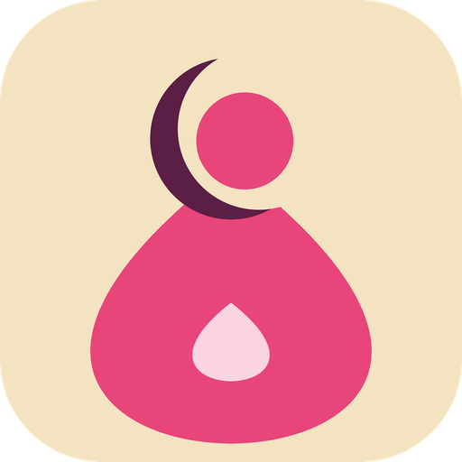

A free, offline mobile app that helps women and girls in Chad understand their periods, follow their pregnancy and recognise danger signs after childbirth.
Try the prototype Open source codePeriods are taboo, early pregnancies are common, danger signs are recognised too late, and mobile internet is rare and expensive. Most health apps need internet and assume users can read.
Founder and project lead. Second-year midwifery student (Obstetric Care), Faculty of Human Health Sciences, University of N'Djamena, Chad.
Early prototype (October 2026). Next steps: field research with women, girls and midwives in N'Djamena, medical validation of content, and a pilot with 300 users. Health content in the prototype is a draft pending medical validation.